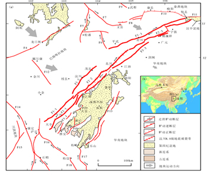

The Longmenshan Fault Zone extends from Luding and Tianquan in the south to the northeast, passing through Guanxian, Maowen, Beichuan, and north of Guangyuan before entering the Mianxian area in Shaanxi. It has an overall NE-SW orientation, with a length of approximately 500 km and a width of 30-40 km (see figure). It is a thrust fault with a northwestern thrust direction and a simultaneous right-lateral strike-slip component. The fault zone is composed of four main branches: the Longmenshan Back Mountain Fault (including the Gengda-Yilongdong Fault, Maowen-Wenchuan Fault, and Qingchuan Fault), the Central Fault (including the Yanjing-Wulong Fault, Beichuan-Yingxiu Fault, and Chaba-Linansi Fault), the Foreland Fault (including Dachuan-Shuangshi Fault, Guanxian-Anxian Fault, and Jiangyou Fault), and the Foreland Concealed Fault. These branches, along with their controlled thrust structures or nappes, form an overthrust belt with the characteristic of forward propagation (Tang Rongchang et al., 1993; Deng Qidong et al., 1994). The Longmenshan Fault Zone can be divided into three segments along its strike: the northern, central, and southern segments. The northern segment includes the Qingchuan Fault, Chaba-Linansi Fault, and Jiangyou Fault; the central segment includes the Maowen-Wenchuan Fault, Beichuan-Yingxiu Fault, and Guanxian-Anxian Fault; and the southern segment includes the Gengda-Yilongdong Fault, Yanjing-Wulong Fault, and Dachuan-Shuangshi Fault. The activity of the Longmenshan Fault Zone shows distinct segmentation. It is divided into the southwestern segment and northeastern segment based on the line of Huya-Songpan-Pingwu, with the Huaya Fault and the Minshan Uplift as the boundary. The activity of these two segments differs significantly. The southwestern segment has experienced relatively intense activity since the Late Pleistocene, while the northeastern segment had activity in the early to middle Quaternary but is considered inactive in the late Quaternary (Chen Guoguang et al., 2007; Deng Qidong et al., 1994; Li Chuanyou et al., 2004). Historically and based on modern instrument records, the southwestern segment has experienced three strong earthquakes of magnitude 6-6.5: the Wenchuan earthquake of magnitude 6.5 on April 21, 1657; the Beichuan earthquake of magnitude 6.25 on February 8, 1958; and the Dayi-West earthquake of magnitude 6.3 on February 24, 1970. There are no records or documentation of earthquakes with a magnitude greater than 6 in the northeastern segment of the Longmenshan Fault Zone (Tang Rongchang et al., 1993). Using geomorphic offsets and age dating, the horizontal slip rate of the southwestern segment of the Longmenshan Fault Zone is estimated to be 2-3 mm/yr since the Late Quaternary (Tang Rongchang et al., 1993). Densemore et al. (2007) obtained Holocene horizontal slip rates along the Beichuan-Yingxiu Fault at Gaoyuan, Baishuihe, and Donglinsi, approximately 0.36, 0.5, and 0.07 mm/yr, respectively. The slip rate along the Guanxian-Anxian Fault is approximately 0.6 mm/yr. GPS observations over a decade also show that the current tectonic deformation rate does not exceed 2 mm/yr across the Longmenshan Fault Zone (Zhang Peizhen et al., 2008).
Revised Distribution Map of Aftershocks and Epicenters
Article Source: Institute of Geology, China Earthquake Administration (Special Note: Any infringement issues will be promptly addressed upon contact for removal.)